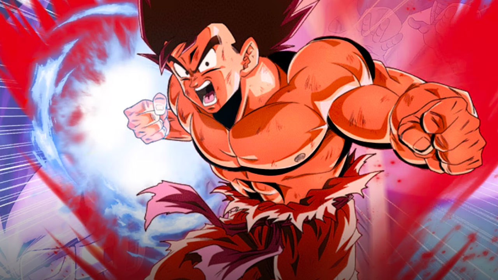

kaioken

Supersaiyan

Supersaiyan azul
El Supersaiyano Azul (超スーパーサイヤ人じんブルー, Sūpā Saiya-jin Burū) es una variación y derivado del Supersaiyano tras la asimilación del poder del Supersaiyano Dios[6], así como la versión del Supersaiyano Dios Supersaiyano de un mortal, en contrapartida con la versión divina de un Kaio-shin, conocida como Supersaiyano Rosado.
Aparece por primera vez en la película Dragon Ball Z: La resurrección de 'F' y el Arco de la Resurrección de Freeza del anime de Dragon Ball Super durante el enfrentamiento entre Son Goku Supersaiyano Azul contra Freeza Dorado.